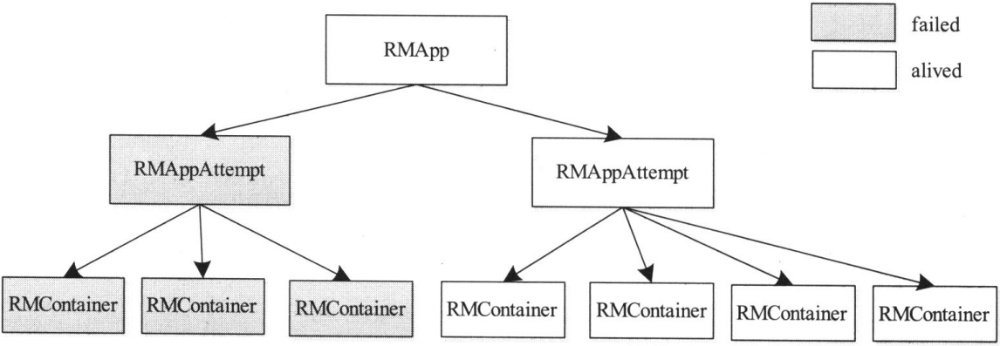

ApplicationMaster管理
ApplicationMaster管理部分主要由三个服务构成，分别是ApplicationMasterLauncher、AMLivelinessMonitor和ApplicationMasterService，它们共同管理应用程序的ApplicationMaster的生命周期
ApplicationMasterLauncher、AMLivelinessMonitor和ApplicationMasterService这三个组件是如何协同管理ApplicationMaster生命周期，介绍从ResourceManager获得资源启动ApplicationMaster ：
- 用户向YARN ResourceManager提交应用程序，ResourceManager收到提交请求后，先向资源调度器申请用以启动ApplicationMaster的资源，待申请到资源后，再由ApplicationMasterLauncher与对应的NodeManager通信，从而启动应用程序的ApplicationMaster
- ApplicationMaster启动完成后，ApplicationMasterLauncher会通过事件的形式，将刚刚启动的ApplicationMaster注册到AMLivelinessMonitor，以启动心跳监控
- ApplicationMaster启动后，先向ApplicationMasterService注册，并将自己所在host、端口号等信息汇报给它
- ApplicationMaster运行过程中，周期性地向ApplicationMasterService汇报心跳信息
- ApplicationMasterService每次收到ApplicationMaster的心跳信息后，将通知AMLivelinessMonitor更新该应用程序的最近汇报心跳的时间
- 当应用程序运行完成后，ApplicationMaster向ApplicationMasterService发送请求，注销自己
- ApplicationMasterService收到注销请求后，标注应用程序运行状态为完成，同时通知AMLivelinessMonitor移除对它的心跳监控
介绍三个服务
ApplicationMasterLauncher
ApplicationMasterLauncher即是一个服务，也是一个事件处理器，它处理AMLauncherEvent类型的事件，该类型事件有两种，分别是请求启动一个ApplicationMaster的”LAUNCH”事件和请求清理一个ApplicationMaster的”CLEANUP”事件。ApplicationMasterLauncher维护了一个线程池，从而能够尽快地处理这两种事件
- 如果ApplicationMasterLauncher收到了”LAUNCH”类型的事件，它会与对应的NodeManager通信，要求它启动ApplicationMaster。整个过程比较简单，首先创建一个ContainerManagementProtocol协议的客户端，然后向对应的NodeManager发起连接请求，接着将启动AM所需的各种信息，包括启动命令、JAR包、环境变量等信息，封装成一个StartContainerRequest对象，然后通过RPC函数ContainerManagementProtocol#startContainer发送给对应的NM
- 如果ApplicationMasterLauncher收到了”CLEANUP”类型的事件，它与对应的NodeManager通信，要求它杀死ApplicationMaster。整个过程与启动AM的过程类似
AMLivelinessMonitor
该服务周期性遍历所有应用程序的ApplicationMaster，如果一个ApplicationMaster在一定时间内未汇报心跳信息，则认为它死掉了，它上面所有正在运行的Container将被置为运行失败；如果AM运行失败，则由RM重新为它申请资源，以便能够重新分配到另外一个节点上执行
ApplicationMasterService
ApplicationMasterService实现了RPC协议ApplicationMasterProtocol，负责处理来自ApplicationMaster的请求，请求主要包括注册、心跳和清理三种，其中，注册是ApplicationMaster启动时发生的行为，请求包中包含AM所在节点、RPC端口号和tracking URL等信息；心跳是周期性行为，包含请求资源的类型描述、待释放的Container列表等，而AMS为之返回新分配的Container、失败的Container等信息；清理是应用程序运行结束时发生的行为，ApplicationMaster向RM发送清理应用程序的请求，以回收资源和清理各种内存空间
ApplicationMasterLauncher启动AM后，AM做的第一件事是向RM注册，这是通过RPC函数ApplicationMasterProtocol#registerApplicationMaster实现的
AM运行过程中，需要周期性地通过RPC函数ApplicationMasterProtocol#allocate与RM通信，这主要有以下三个作用 ：
- 请求资源
- 获取新分配的资源
- 形成周期性心跳，告诉RM自己还活着
AM运行结束后，需要通过RPC函数ApplicationMasterProtocol#finishApplicationMaster告诉RM自己运行结束，可以回收资源和清理各种数据结果了
NodeManager管理
NodeManager管理部分主要由三个服务构成，分别是NMLivelinessMonitor，NodesListManager和ResourceTrackerService，它们共同管理NodeManager的生命周期
介绍三个服务
NMLivelinessMonitor
该服务周期性的遍历集群中所有NodeManager，如果一个NodeManager在一定时间内未汇报心跳信息，则认为它死掉了，它上面所有正在运行的Container将被置为运行失败。需要注意的是，RM不会重新执行这些Container，它只会通过心跳机制告诉对应的AM，由AM决定是否重新执行。如果需要，则AM重新向RM申请资源，然后由AM与对应的NodeManager通信以重新运行失败的Container
NodesListManager
NodesListManager管理exlude(类似于黑名单)和inlude(类似于白名单)节点列表，这两个列表所在的文件分别可通过yarn.resourcemanager.nodes.include-path和yarn.resourcemanager.nodes.exclude-path配置，其中，exlude节点列表可认为是黑名单，它们不允许直接与RM通信，而inlude节点列表可认为是白名单。默认情况下，这两个列表均为空，表示任何节点均被允许接入RM。需要注意的是，管理员可通过命令”bin/yarn rmadmin -refreshNodes”动态加载这两个文件
ResourceTrackerService
ResourceTrackerService实现了RPC协议ResourceTracker，负责处理来自各个NodeManager的请求，请求主要包括注册和心跳两种，其中，注册是NodeManager启动时发生的行为，请求包中包含节点ID，可用的资源上限等信息；而心跳时周期性行为，包含各个Container运行状态，运行的Application列表，节点健康状况，而ResourceTrackerService则为NM返回待释放的Container列表、Application列表等
NM启动时，它所作的第一件事是向RM注册，这是通过RPC函数ResourceTracker#registerNodeManager实现的，注册信息包括节点可用资源总量，对外开放的HTTP端口号等
NM启动后，他会周期性地通过RPC函数ResourceTracker#nodeHeartbeat汇报心跳，心跳信息包含各个Container运行状态，运行的Application列表，节点健康状况等信息，而RM则为之返回需要释放的Container列表，Application列表等
Application管理
YARN中,Application是指应用程序,他可能启动多个运行实例,每个运行实例由一个ApplicationMaster与一组该ApplicationMaster启动的任务组成,他拥有名称、队列名、优先级等属性,是一个比较宽泛的概念,可以是一个MapReduce作业、一个DAG应用程序，设置可以是一个Storm集群实例
介绍三个服务
ApplicationACLsManager
ApplicationACLsManager负责管理应用程序的访问权限，包含两部分权限：查看权限和修改权限。其中，查看权限主要用于查看应用程序基本信息，比如运行时间、优先级等信息；而修改权限则主要用于修改应用程序优先级、杀死应用程序等。默认情况下，任意一个普通用户可以查看所有其他用户的应用程序。用户可以为自己的应用程序设置具有访问权限的用户列表，具体方法是在客户端使用ContainerLaunchContext#newInstance构造ContainerLaunchContext实例时将其作为参数传入。
通常而言，为了便于用户设置该参数，运行在YARN之上的计算框架会预留一些参数供用户提交应用程序时动态设置，比如MapReduce计算框架允许用户通过参数mapreduce.job.acl-view-job和mapreduce.job.acl-modify-job为每个应用程序设置查看和修改权限
RMAppManager
RMAppManager负责应用程序的启动和关闭。ClientRMService收到来自客户端的提交应用程序请求后，将调用函数RMAppManager#submitApplication创建一个RMApp对象，它将维护这个应用程序的整个生命周期，从开始运行到最终结束；当RMApp运行结束后，将向RMAppManager发送一个RMAppManagerEventType.APP_COMPLETED事件，他收到该事件后将调用RMARMAppManager#finishApplication进行收尾工作，包括 ：
- 将该应用程序放入已完成应用程序列表中，以便用户查询历史应用程序运行信息。需要注意的是，该列表的大小是有限的，默认是10000(管理员可通过参数yarn.resourcemanager.max-completed-applications修改)，当已完成应用程序数目超过该值时，将从内存数据结构中移除(移除的应用程序可称为”过期的应用程序”)，这样用户只能通过History Server获取过期的应用程序信息，History Server是从磁盘文件中获取这些信息的
- 将应用程序从RMStateStore中移除。RMStateStore记录了运行中的应用程序的运行日志，当集群故障重启后，ResourceManager可通过这些日志恢复应用程序运行状态，从而避免全部重新运行，一旦应用程序运行结束后，这些日志便失去了意义，故可以对其进行删除。这属于ResourceManager容错机制的范畴
ContainerAllocationExpirer
当一个AM获得一个Container后，YARN不允许AM长时间不对其使用，因为这会降低整个集群的利用率。当AM收到RM新分配的一个Container后，必须在一定的时间内在对应的NM上启动该Container，否则RM将强制回收该Container
状态机管理
YARN中，如果一个对象由若干个状态以及触发这些状态发生转移的事件构成，它将被抽象成一个状态机，在YARN ResourceManager内部，共有四类状态机，分别是RMApp，RMAppAttempt，RMContainer和RMNode。其中，前2类状态机维护了一个应用程序相关的生命周期，包括Application生命周期，一次进行尝试的生命周期；RMContainer则维护了分配出去的各个资源的使用状态；RMNode维护了一个NodeManager的生命周期
YARN中的Application生命周期由状态机RMAppImpl维护，每个Application可能会尝试运行多次，每次成为一次”运行尝试”，而每次运行尝试的生命周期则由状态机RMAppAttemptImpl维护，如果一次运行尝试运行失败，RMApp会创建另外一个运行尝试，知道某次运行尝试运行成功或者达到运行尝试上限。对于每次运行尝试，ResourceManager将为它分配一个Container，Container是运行环境的抽象，内部封装了任务的运行环境和资源等信息，而一个应用程序的ApplicationMaster就运行在这个Container中。ApplicationMaster启动之后，会不断向ResourceManager申请Container以运行各类任务。Container的生命周期由状态机RMContainerImpl维护

Application Attempt的生命周期与ApplicationMaster的生命周期基本上是一致的 ： 一个Application内部所有任务均由ApplicationMaster维护和管理，ApplicationMaster本身需要占用一个Container，而这个Container由ResourceManager为其申请和启动。一旦ApplicationMaster成功启动，他就会与ResourceManager通信，为它内部的任务申请Container。如果ApplicationMaster重新启动，则意味着一个新的Application Attempt被启动，换句话说，一个Application Attempt的”生死存亡”与ApplicationMaster的”命运”紧紧绑定在一起